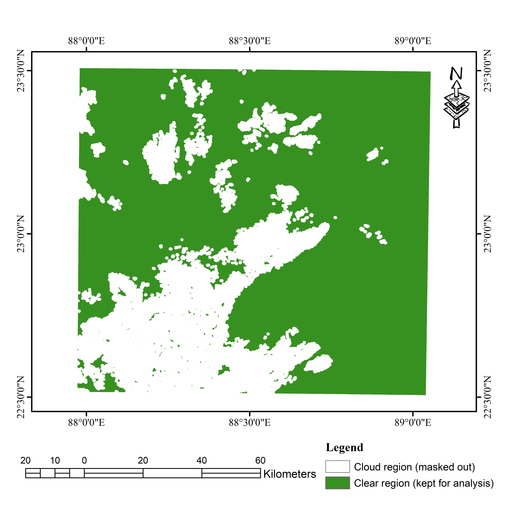
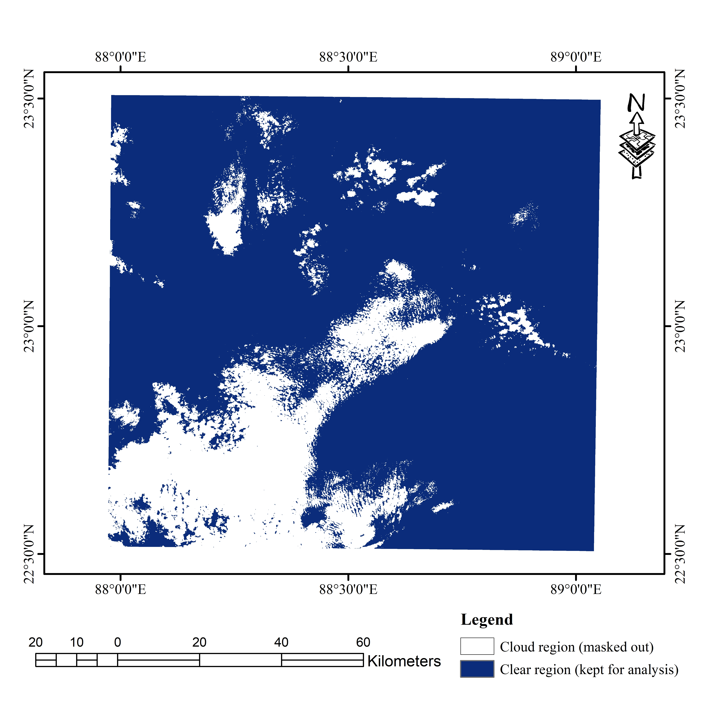

🡾 Project Details
- Repository: S2 Cloud Masking: QA60 vs CloudScore+
- Role: Remote Sensing / GEE Developer
- Tools: Google Earth Engine (JavaScript API), Sentinel-2 L1C/L2A, s2cloudless / CloudScore+, Export to Drive
- Region and Period: Barasat, West Bengal, India (2025)
- Duration: August 2025
Objectives
- Implement QA60 and CloudScore+ masking pipelines end-to-end in GEE.
- Visually compare masked composites and quantify cloud-free pixel coverage.
- Document method strengths and limitations with practical thresholding guidance.
Pipeline
01
Data Ingestion
Filter Sentinel-2 L1C/L2A collections by ROI, date range, and initial cloud cover metadata
02
Masking
Apply QA60 bitmask (bits 10 and 11) and CloudScore+ probability threshold independently to each scene
03
Compositing
Generate cloud-free median mosaics for both methods over the identical date range and study area
04
Export and Compare
Export side-by-side maps and binary masks to Google Drive for quantitative and visual comparison
Tools Used
Google Earth Engine
JavaScript API
Sentinel-2 L1C
Sentinel-2 L2A
QA60 Bitmask
CloudScore+
s2cloudless
Median Compositing
Export to Drive
⚖ Method Comparison
Both approaches applied to the same Sentinel-2 scenes over Barasat, India.
QA60 Bitmasking
- Source: Sentinel-2 L1C QA60 band
- Bit 10: Opaque cloud flag
- Bit 11: Cirrus cloud flag
- Output: Binary mask, cloud or clear, no probability
- Speed: Very fast, no additional model required
- Weakness: Can leave thin clouds and haze unmasked
- Best for: Quick processing, rough mapping, broad overviews
CloudScore+
- Source: Per-pixel cloud probability score (0 to 1)
- Threshold: Typically 40 to 60% probability cutoff
- Output: Continuous probability with user-defined threshold
- Speed: Slower, requires probability layer computation
- Strength: Handles thin clouds, haze, and shadow more effectively
- Best for: Index computation, change detection, high-precision work
📷 Visuals

Original Sentinel-2 image of Barasat, India (unmasked) showing cloud coverage.

QA60 masking result. Clouds flagged using bitmask (opaque + cirrus). Note residual thin cloud areas.

CloudScore+ masking result. Per-pixel cloud probability thresholding removes haze more effectively than QA60.
Binary Mask Comparison

QA60 binary mask. White = cloud, green = clear.

CloudScore+ binary mask. White = cloud, blue = clear.
Visual note: The CloudScore+ mask captures additional haze regions missed by QA60, particularly over vegetated areas and around cloud edges. This is most visible in the binary mask comparison above.